The personal web of the and early was built out of other people's parts: tiled backgrounds, animated dividers, buttons, cliques, adoptables, dolls, and the pages made to hold them. A lot of the socializing happened through those parts. A button sent you to somebody else's site; an award showed that another webmaster had approved of yours; a sig tag or blinkie said something about you without a paragraph of explanation. Even a tiled background could carry one person's work into hundreds of other people's websites.
Net artist Olia Lialina documented this culture in , when its conventions were still recent and much of the material was still online, even though the classic amateur homepage was already receding from the mainstream web. In A Vernacular Web she described a bright, cluttered, homemade web assembled by amateurs out of animated GIFs, tiled backgrounds, MIDI files, construction signs, and whatever else was lying around.[1] People got used to encountering graphics as separate, reusable pieces of material, to be found, saved, collected, arranged, credited, traded, and, when the creator allowed it, edited or recombined (Linkware covers how possessive some of that culture actually was).
Glitter graphics were one piece of it, and their own story is in History. Most of this culture predates glitter or grew up alongside it, but it is the visual and social ground glitter graphics grew out of, and the ground Blingee later drew on more directly.
For the broader preservation story and a chronology of the platforms that shaped the personal web, see Preservation.
Personal sites ranged from carefully designed to complete chaos. Plenty of people trained their eye for design on one, a bad color choice and one too many blinking GIFs at a time. Maximalism was always available, though, and nobody was there to stop you: tiled backgrounds fighting five different fonts, animated glitter piled on more animated glitter, a MIDI file autoplaying whether you asked for it or not. Why wouldn't you post every pretty thing you could find? A site could be beautifully put together, a complete mess, or both depending on which page you clicked into.
Most of the time, you had no idea who was visiting your website. There was something slightly voyeuristic about it: someone could find your homepage, read everything you had written, and leave without saying a word. Visitor-tracking services such as NedStat, eXTReMe Tracking, and later StatCounter reported visits, referring sites, and sometimes a country or region, but the visitors themselves were mostly anonymous.
Hit counters made at least one part of that audience visible: a little number at the bottom of the page told you how many page loads, visits, or unique visitors the counter had registered. Because it was usually public, it told everybody else too. A high number could make a site look established or popular in much the same way a follower count does now. Guestbook entries, topsite rankings, and banner clicks offered a few more signs that somebody was actually out there, but none of them told you exactly who was reading.
Search engines influenced which sites were easiest to find, and Google rewarded pages that other sites linked to. People also followed hand-maintained directories, free-host neighborhood directories, recommended-site lists, webrings, topsites, and forums. Rather than searching the web, you were often browsing somebody else's selection of it. Each owner decided, in Notepad, a WYSIWYG editor, or their host's HTML box, what their corner of the internet should look like. Some wrote a whole "why I made this site" manifesto about something they'd built simply because they wanted to. I did it for this site!
A personal site did not necessarily have much personal information on it. Some webmasters devoted most of their space to graphics and tutorials for visitors, and the same person might run a personal site, a graphics site, a clique, and several little fan sites at separate addresses.
A character shrine could be a single dedicated page within a larger personal site, or an entire mini-site of its own, devoted to one specific obsession: a character, pairing, series, or other favorite subject. Depending on the corner of the web, the same thing might be called a fan page, fansite, tribute, dedication, or character page instead. Fan pages were widespread by the mid-, and "shrine" circulated in some fandom communities too; it just wasn't a universal personal-web term.
Shrines became especially common in anime and manga fandom. Before anime became much easier to find in the West, the internet was one of the places fans went to find information about series that might never appear on local television or in an ordinary video store. A fan site could have character profiles, episode summaries, image galleries, translations, fan art, fanfiction, and links to fansubs or other sites devoted to the same series. Sometimes you had to already be online to discover any of this in the first place. One anime page led to another, then to a webring or directory, and suddenly there was an entire fandom for something you might never have encountered offline.
The term also appeared outside anime fandom: the GeoCities fansites catalogued by Fanlore include Jayde’s Shrine to Great Fan Fic. Modern Neocities guides use "shrine" more broadly for an enthusiastically curated page about anything the webmaster loves: Pokémon, a book, a tabletop campaign. The term was not exclusive to anime fandom, though its use varied from one community to another. An older anime fan might recognize the word immediately; another personal-site owner might never have used it.
GeoCities was the best-known and one of the largest free homepage hosts, but it was only one part of a much larger ecosystem. Tripod, Angelfire, Homestead, AOL Hometown, and countless smaller services also gave ordinary users free space to build and publish personal websites. What set GeoCities apart was how thoroughly it turned that hosting space into a metaphorical place. Rather than simply placing users beneath account names or directory categories, early GeoCities sites were assigned numbered addresses inside themed neighborhoods and suburbs. Its users were homesteaders, living in places such as Hollywood, Area51, Tokyo, and WestHollywood. That system was phased out for new members in , when GeoCities moved toward simpler username-based addresses. Archivists saved so much of it after Yahoo shut it down in that "GeoCities" became shorthand for a whole style of amateur web design; the rescue is part of Preservation.[2][3]
Other hosts put their own structures into the address: Angelfire originally required directories such as angelfire.com/realm2/username/ or angelfire.com/biz6/username/, later offering simpler username.angelfire.com addresses while older sites kept their URLs.[4][5] FortuneCity used areas, streets, and numbered sites.[6] A strange extra piece of an old URL could tell you how its host had organized the people living there.
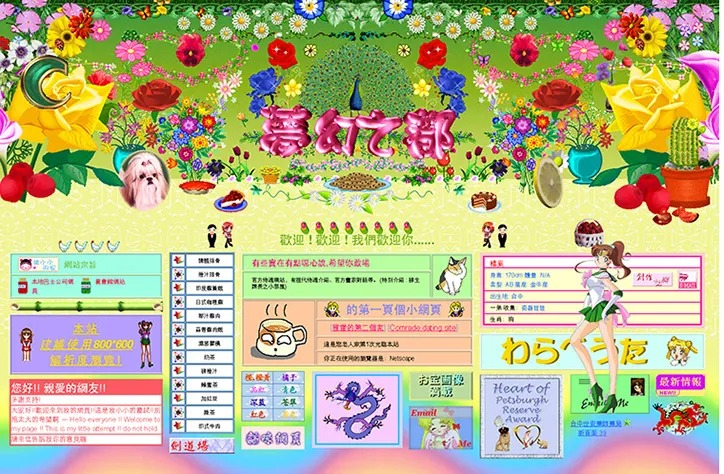
A reconstructed landscape of the early personal web, assembled from fragments of archived GeoCities pages active between and .
Outside the free homepage services, some internet providers included webspace with a subscription, and people who paid for their own hosting could register a domain. A shorter address did not necessarily mean somebody had bought hosting: services such as CJB.net offered free URL redirection, sending visitors to a much longer address on a free host. Free .tk addresses served a similar purpose; the original address of Binky Beads, for example, was binkybeads.tk.
Owners of paid domains often gave other people space on them, and getting that space usually meant applying for it. A domain owner, often called a hostess, gave selected hostees a subdomain, an FTP account, and a small allowance of space and bandwidth, sometimes with MySQL, PHP, CGI, and script installation on top. It generally cost nothing beyond a credit or a link back, but applicants could be judged on their HTML and graphics work, their previous sites, their technical knowledge, and whether the hostess wanted that kind of content on her domain at all. Kawaiiness.com said in that it was looking for "cute, pixel or visitor based content/cliques/adoption sites," and asked for examples of previous work, FTP and hosting knowledge, and readable English.[7] Having a good .com that other people wanted attached to their name could become a small status symbol, and being hosted on one worked much the same way.
Misa's site, still sitting on a phoophie.com subdomain, is a surviving example of what that could look like. Its red custom scrollbars, custom cursor, and 7pt Georgia still load, and the navigation panels divide neatly into Link In, a row of buttons visitors were told to save to their own servers, and Link Out, described as "lovely sites that I admire, frequent or owe to. Includes affies." Those links lead to other personal subdomains on domains including chewables.org, happy-mix.net, and neonlove.net.
Most personal sites were built from basic HTML, a free host's page builder, or a drag-and-drop editor, then decorated with graphics and resources collected from other sites. GeoCities' own drag-and-drop tool was PageBuilder, which introduced itself like this:[8]
Create a cool, full-featured site without any HTML coding. Customize your pages with pictures, sounds, Add-Ons and more. Click 'Launch PageBuilder' to start from scratch, or choose a pre-made template below.
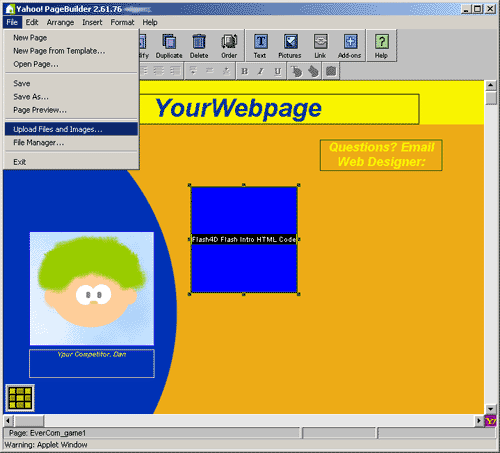
The editor window itself: a page under construction, built by clicking and dragging boxes of text, pictures, and Add-Ons into place.
Yahoo!, archived .Sites that taught HTML mostly handed over code to copy. Funky Chickens HTML Help, created in , broke it into little effects.[9] Lissa Explains it All launched in , when Alyssa Daniels was 11, to help kids and beginners build webpages without an automatic builder. Her notes moved from AOL to GeoCities, then to their own domain when she was 12. Daniels later became a streamer under the name LyssaTee; she discussed the HTML site in a interview. Alyssa’s sister Sarah ran Sarah’s Useful Web Stuff, which supplied fonts, blinkies, and other graphics to put on those pages. CYP2 / ColorYourProfyle supplied colors, moving text, ALT characters, Wingdings, Webdings, dolls, and premade profiles for AOL's tiny editable boxes.[10]
You didn't necessarily sit down to "learn web development." You copied a marquee, found a color code, broke the page, and eventually figured out why. Right-clicking and hitting "View Source" let you see how someone had done something and lift the part you needed. Disabled-right-click scripts tried to stop that, with limited success. At seven years old, I copied code straight off a site that hadn't bothered with one, and still got called out for it in my own guestbook.
Neopets built HTML editing into the site by giving each pet a species-specific petpage whose existing code could be rearranged or replaced. A update added variables for people already designing those pages, so the feature existed by then; the official update archive doesn't go back far enough to give its launch date.[11] The Fun Images library put ready-to-copy HTML beneath animated graphics for petpages, userlookups, shops, and guilds.[12]
The official HTML Guide arrived on and was marked complete on , covering basic tags, banners, and tables.[13][14][15] It also taught NeoCircles, the site's webring system, introduced that .[16] You could start with a working page and learn by changing it, breaking it, and fixing it.
Plenty of Neopets users learned from other players instead, through fansites with their own HTML, CSS, and layout tutorials: Darkest Faerie Lair taught guild layouts, shops, lookups, and sidebars, and its owner spun the general coding lessons off into Spider's Web Tutorials, a beginner web-design site covering site planning, CSS, HTML, graphics, and layouts.[17][18]
A guild could have its own website outside Neopets, while a petpage inside the game could serve as a graphics library or a tutorial site. SoupFaerie.com was one of the sites supplying backgrounds, images, and premade lookups for other players.
Sites that put more effort into design often started by mocking up a complete design in Photoshop or Fireworks, cutting it into smaller image slices, and reassembling those pieces as a webpage using HTML tables.[19][20] ImageReady, bundled with Photoshop, could generate the slices and HTML automatically, while Fireworks was closely integrated with Dreamweaver for the same kind of work.[21][22] Designers also had to work around the screen sizes their visitors were likely to use. Around and , 800 × 600 was a common baseline, although the page itself had to be narrower to leave room for the browser.[23][24]
Premade table layouts, iframe layouts, and later DIV layouts circulated as downloadable resources. Many were designed around one large photograph, illustration, celebrity, anime character, or other piece of artwork, with functional areas worked into the image for navigation and content. Image maps and rollover links could turn parts of the artwork into navigation, while tiny text helped squeeze content into small boxes and Internet Explorer let designers change the scrollbar colors to match. Splash pages asking you to "Enter" became another staple of design-heavy personal sites. Whole sites were devoted to premade layouts.[25]
With an iframe, you could load another HTML document inside a page without replacing the rest. Navigation might sit on the left and changing content on the right, or several small frames might fit around the artwork. Surviving examples from around show these layouts being used alongside image maps and tiny text. They could feel cleaner and more organized than the wandering pages of a few years earlier, even if some have aged terribly.[26]
An ordinary HTML frameset divided the browser window itself into separate documents. Giving a frame a name let navigation links target it without reloading the menu. With a positioned DIV layout, the text and navigation could instead sit at specified coordinates over a background image.
The Holy Grail layout put a header and footer around three columns: navigation, content, and a second sidebar. Reproducing it reliably in CSS, with equal-height columns, fixed sidebars, and a flexible center, was notoriously difficult.[27]
Beyond holding a sliced page together, tables could be sized with tiny transparent images such as spacer.gif to force individual cells to particular widths and heights, and visual effects that would later become simple CSS often had to be assembled from image pieces.[20] One common trick built a decorative frame from a 3×3 table: the actual text sat in the center cell while the eight cells around it held pieces of one image. The same basic technique could make a box stretch while keeping illustrated corners and edges intact.[20] On personal sites, a block of content might appear to sit inside a glass jar, a pixel-art object, a ripped game sprite, or some other illustrated container. Designers sometimes distributed these pieces as resources for other people to build with.[7]
Within the more design-heavy personal-domain scene, especially among the girls and young women who often called themselves webmistresses, me/you/site became a recognizable way to organize all of that content.[7] The labels varied, but the split was familiar: me for autobiographical material, you for whatever was on offer to visitors, including adoptables, tutorials, and web graphics, and site for affiliates, cliques, fanlistings, credits, and an archive of previous layouts. Some people used me / you / www; others dressed the same three areas up as the girl / the goods / the www. A homepage might also carry a currently section listing what its owner was eating, watching, listening to, reading, or thinking about that week. Some people redesigned their entire site every few weeks because they'd learned a new technique or found a style they liked better, keeping screenshots of old designs in a layout archive under titles or version numbers.
Tiny graphics made specifically for websites included tiled backgrounds, animated dividers, bullets, arrows, clipart, pixel sprites, matching Home / About / Links / Guestbook buttons, hit counters, email graphics, welcome signs, Online / Away / Updated graphics, and flashing "Under Construction" banners. Little "NEW!" icons pointed at whatever had changed. Background MIDI, then WAVs and MP3s, made the page audible too. "Best viewed in Netscape," "Best viewed at 800 × 600," browser badges, HTML-validation buttons, "Made with Notepad" graphics, and dated update logs were familiar fixtures.[28][29][30] A lot of pages also ran small scripts and HTML tricks: marquees, cursor trails, clocks, status-bar messages, disabled right-clicks, rollover images, pop-ups, splash screens, browser-specific entrances. Personal sites rarely felt finished because people kept adding things to them, which probably explains why "Under Construction" survived for so long.
Large graphics libraries existed specifically to supply webmasters with the parts they needed to build a site. Randy's Icon Bazaar[31] distributed icons. Animation Factory[32] became a major source for the unmistakable rendered animated GIFs and 3D clipart that spread across personal sites. GRSites' Absolute Background Textures Archive[33] (mirror) offered thousands of seamless backgrounds alongside buttons, bullets, arrows, rules, icons, and generated headings.
Graphics creators put together coordinated websets: a matching background, divider bars, bullets, headers, navigation buttons, and usually a small button crediting whoever made the set. Moyra's Web Jewels offered websets and other free graphics alongside hundreds of other sites distributing linkware, custom sets, and freebies.[34][35][36][37]
Sozai (素材, literally "materials") were pixels made to do a job: dividers, bullets, navigation icons, Home and Back and Top and Email graphics, blank buttons for visitors to label themselves, and other small pieces for assembling a page, usually offered in coordinated colors. On me/you/site pages they lived in the you section with everything else laid out for visitors to take. Parts of today's revival scene use the word for almost any tiny sugary pixel graphic, but the older sense was functional.[7]
Japanese sites distributing these materials were called sozaiya (素材屋). A guide to building a free homepage in Internet Watch listed sites offering custom backgrounds, photographic buttons and table frames, and a directory of resource sites organized by keyword. Ken no Sozaiya Navi, which dates its directory to , divided resources by file type and by the look you wanted, from Japanese-style and pastel to dark and retro. Direct linking was called chokurinku (直リンク); WEB Sozai DX still prohibits it and asks users to link back to the site.
On Japanese personal sites, a kiriban (キリ番) was a particular counter number, such as 1000 or 7777; if you happened to land on it, you could leave a message in the BBS to tell the webmaster. Some offered a drawing on request, known as kiririku (キリリク), to the visitor who got the number. The owner of Tecchan.jp remembers reporting kiriban in BBS posts in the early . Japanese sites also used link free (リンクフリー) to indicate that you could link to the site without asking first, which was quite a different permission from being allowed to direct-link its graphics.
Linkware was free to use on the condition that you linked back to its creator.[35][36] Additional terms might require a credit button on the same page, forbid alterations or commercial use, keep a webset together, or prohibit redistribution. Permission to use a graphic did not mean permission to repost it in your own collection. Tutorials and resource lists often sent visitors to the original site instead.
The files were supposed to be saved and uploaded to your own server. "DO NOT DIRECT LINK" warnings were common because hotlinking somebody else's GIF made their server deliver it whenever somebody loaded your page, using their bandwidth instead of yours. It was routinely called bandwidth theft. Site owners could block outside requests or replace a hotlinked file with a warning graphic, making the offending site display whatever image the original owner chose to serve. Some creators included blank buttons or matching fonts so a set could be extended without altering the original graphics; others had extremely specific rules about what could be recolored, modified, mixed, or redistributed.
If you needed somewhere to upload the files, remote image hosts such as Photobucket, ImageShack, and TinyPic supplied addresses you could use in an image tag or a forum post. Other hosts were more specialized: Boomspeed hosted auction images, and in a user reported losing their account for using it for something other than auctions. A graphic stored on a remote host could disappear from every page displaying it if the account was closed.
Personal sites often combined backgrounds, fonts, dolls, scripts, brushes, buttons, and other pieces made by different people. Credits and Resources pages listed those sources and linked back to their creators. Attribution was inconsistent, links died, and graphics escaped their original context constantly, but crediting the creator and linking back were established parts of the resource culture.
Layouts were also distributed as downloadable resources, sometimes in ZIP files containing the HTML, stylesheet, image slices, and instructions on where to put the files and edit the content. Creators offered complete layouts for other people to use and customize: change the colors, replace the main image, rewrite the content, keep the bones. The creator's credit and link back generally stayed with the layout, and the creator decided how extensively its code and graphics could be changed. That permission applied to layouts offered as resources, not to any layout somebody happened to see on another person's site. Copying someone's personal design or code without permission, removing somebody else's credit, or presenting their work as your own violated the same rules that applied to graphics. Some creators allowed extensive modification; others were considerably more "DO NOT TAKE MY CODE" about it.
In dolling, frankendolling meant taking parts of other artists’ dolls and piecing them together into a new one without their permission. The revived Together Forever Project traces its original clique to late : participants drew themselves on a base made for the project as a show of opposition to frankendolling. Sharing a base did not give you permission to take the hair or clothing another artist had drawn on it.
"Think your gonna copy? Then leave," featuring Mini-style cartoon dollz.
Credit: carly_20032000 (GeoCities, archived ).Not all graphics were linkware: some creators called their unrestricted or less restricted downloads freeware, sold graphics as purchaseware, or made personalized graphics on request. The terms varied from site to site, so the rules on the creator’s page mattered more than the label.
Long before social media feeds, hit counters told you somebody had visited; guestbooks let them leave proof, usually with a name, website address, and sometimes a personalized calling card.[38][39]
Victorian ladies calling upon other hostesses left their cards in a tray or bowl in the foyer; the tradition was reborn online, with web designers leaving their own cyber calling cards in a site's guestbook.
Credit: Victorian Calling Cards (Oocities mirror).By the early , shoutboxes and tagboards put a tiny public message stream directly on the page, somewhere between a guestbook and live chat. Services such as TagBoard were already turning up on personal sites by , with Cbox following a little later. Site News and Updates pages gave the owner a running place to note whatever had just been added, changed, or redesigned.
A guestmap let visitors sign a world map instead of a guestbook, placing a marker where they lived and leaving a message with it. Bravenet offered one as a hosted service, and personal sites were linking to their maps by . A set of entries from still survives.
Cliques and fanlistings[40] overlapped enough that the distinction could get fuzzy. A fanlisting was, literally, a list of fans of one particular subject, and it did not require a website at all. Cliques were looser. They could be built around an interest, identity, joke, preference, design idea, or some tiny gimmick somebody thought would be fun to pass around, and many expected you to have a site to put the code on. That code did not have to be an image. A text clique might be little more than a word, a heart, and a particular font. The Fanlistings Network opened in and became a central directory for fanlistings. A Buffy the Vampire Slayer fanlisting badge still meant, more or less, "I like Buffy." A clique could say "DESIGN WHORE," "I ♥ MY COMPUTER," name your favorite font, assign your website a scent, or invent some other excuse to put one more strange little thing on your page.
Pick Me! divided these networks in into cliques, webrings, listings, rotations, exchanges, and fanlistings, although those categories already overlapped while they were in use.[7] In the more design-conscious personal-domain scene, plenty of cliques were far more selective than a copy-and-paste code: applications, rules, member lists, and joining graphics no more than about fifteen pixels high, with "elite" cliques making exclusivity the entire appeal. Some required applicants to own a domain or be hosted on somebody else's, and said outright that Angelfire, Tripod, GeoCities, FreeServers, and the rest of the free hosts would not do.
Scented Angels asked members what their current layout would smell like. A green-and-white design might be mint, fresh-cut grass, green apple, or, if that was honestly where it took you, broccoli. Former member Kirryn dates the clique to , credits Mandy Clark, who went by Tira, and remembers its peak around and , especially on anime and manga sites. Her Aromatic reboot runs as a working clique.[41]
Affiliates usually had an ongoing arrangement to link to one another’s sites, often with similar subjects or audiences; sister or brother sites could imply a closer friendship. The labels were loose, and a link exchange could be as simple as: you linked me, I linked you.
In the personal-domain scene, affiliates were often called affies. Two owners arranged it over email, then each displayed the other's little button, commonly around 32×32, on the homepage or in the section about the site itself. It was reciprocal and personal, closer to what would now be called mutuals than to a commercial affiliate program, and some webmasters were as selective about affies as they were about cliques.[7]
Webrings, around since ,[42] connected sites on a shared subject into a navigable chain. Previous, Next, Random, and similar links carried visitors from one member to another, so you could start on a Sailor Moon page, keep clicking Next, and eventually work your way through an entire ring of Sailor Moon sites. The ring was a way to actually move around the web, not just a badge of membership.
Some sites kept an entire Joined page for all of this: cliques and fanlistings they belonged to, webrings they'd joined, affiliates, sister sites, campaigns, and whatever other little networks they had accumulated. These pages could run to dozens of buttons and memberships. Read through one and you got a pretty good picture of where that person spent their time online, what they liked, and which other sites they considered part of their neighborhood.
Website awards put one webmaster's approval on another person's page, at least in theory. Some had applications, published criteria, and an actual review before you were allowed to display the graphic. Others were handed out casually, and some were simply offered for anyone to take and put on their own site. Those free awards were basically participation trophies, but they still served a purpose: the person taking one got something that looked like recognition, and the site that made it got its name and link onto somebody else's page. Contest-winner badges, challenge awards, and participation graphics all looked similar without necessarily meaning the same thing; sometimes you had won something, sometimes you had completed the challenge, and sometimes, with great distinction, you had shown up.
More selective awards often listed the winners, sometimes right on the homepage, which could send a little attention back to their sites. You might display an award because you admired the site that gave it to you, while someone giving an award to a site they admired could put that site's name and link on their own page and publicly associate themselves with it. Some people collected enough awards to need entire sections just to display them.
Webmasters could submit their sites for critiques without applying for an award, and reviewers commented on the layout, colors, navigation, content, and how well the pages worked. On The Webmaster Forums in , people requesting a review were asked to review three other sites themselves. In , the forum published guidelines requiring substantive reviews of at least three lines. Within the more selective personal-domain communities, originality could determine whether you got hosted or admitted to a clique at all. Using a premade layout could count against an applicant.
Websites competed for votes in organized competitions such as The Site Fights, which was running by ; surviving guestbooks are full of invitations to join, requests for votes, and messages from people who had just voted. Sites competed in teams and advanced through rounds toward a final competition called The Dome. Participants kept spirit pages with graphics supporting their teams, and volunteers visited contestants’ sites to cheer them on. Terri’s Site Fights page and a former participant’s account show what those pages looked like.
"I am a star for making this site!" featuring a brunette Prep-style cartoon doll.
Credit: xdancingladyx (GeoCities, archived ).An award visitors had to apply for, featuring a blonde Prep-style doll in a white dress and angel wings.
Credit: Webmasters (archived ).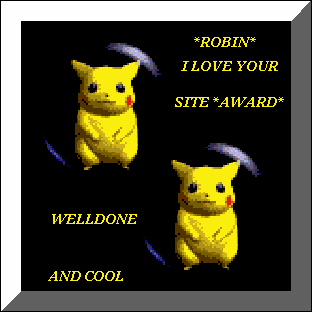
"*Robin* I love your site," "Welldone," and "and cool," with rotating Pikachu figures on blue glass stones(?), and a beveled border.
Awarded to Ulrich Leive by Robin.For traffic beyond their circle of friends, webmasters joined topsites, which ranked sites by visitor votes, and displayed "Vote for me" buttons. Banner exchanges automated another version of the idea: display the exchange's banners on your site and earn displays of your own elsewhere. The goal was simple: get somebody to click.
Digital artists gathered on oekaki BBS (お絵かきBBS), message boards with a drawing canvas built into the browser. Using Java applets such as PaintBBS and Shi-Painter, you could draw and color an illustration, post it to the board, and get comments from other artists. Depending on the applet and the board’s settings, your strokes could also be recorded so visitors could play back the drawing process. Oekaki boards were particularly popular in anime and manga fandom. The Vovo2000 archives preserve drawings and comments from , and 10eastern has restored drawing playback for some of its boards from .
An 88×31 button could work as an identity marker, advertising a browser, cause, fandom, or affiliation, or simply linking to a website. Later, stamps, fanlisting buttons, userbars, sig tags, and blinkies could tell you what somebody liked before you'd read a word they'd written. People filled whole pages with them because collecting them was part of the site.
Netscape helped popularize the 88×31 format while promoting browser-specific HTML. Webmasters used buttons like this to warn that a page was best viewed in Netscape.
Example used by donroby.geo (GeoCities, archived ); a surviving example of the format.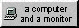
"This page is best viewed with: a computer and a monitor." Once the format was recognizable, it was easy to parody.
Example used by roccooaction on the German GeoCities locale (archived ).An "Only Ayu" button linking to a Hong Kong fansite for Japanese singer Ayumi Hamasaki.
Example used by water117720032001 on the Hong Kong GeoCities locale (archived ).One of the most characteristic uses of the 88×31 format was the Link Me button: save this image to your own server and use it to link to my homepage. Webmasters often offered several designs, and sometimes several sizes, so their buttons would fit neatly alongside whatever a linking site already used. A Link Me button represented the site itself, not an affiliation or a badge of identity. The same 88×31 format was also used for "Best viewed in Netscape" and "Best viewed in Internet Explorer" badges, software and hosting logos, and W3C validation buttons.
The smaller 80×15 antipixel or brilliant button was popularized by Jeremy Hedley on Antipixel in and spread quickly, especially through blogs. By , a MetaFilter discussion was already linking to button generators and debating whether Hedley’s buttons or Dave Winer’s orange XML badge had started the trend. Its tiny size made it easy to stack whole rows of them together. They advertised browsers, operating systems, editors, web standards, RSS and Atom feeds, software, directories, hosts, and other sites, but they were just as useful for declaring interests, affiliations, preferences, or jokes. A row of them could end up reading like a miniature profile.
The most familiar blinkie was the narrow animated banner, usually around 150×20, with a border or other part of the graphic flashing between frames. Another was built from individual letter blocks, sometimes with tiny icons added, with the letters or blocks lighting up, changing color, bouncing, or moving in sequence. Surviving examples show the block style in use by , particularly around doll sites and later Neopets fansites, and tutorials describe blinkies as being assembled from separate "blocks, icons and letters."[43][44][45] The two forms continued alongside each other rather than one simply replacing the other. The block version is now often called a chain, block, or bead blinkie; Glitter-Graphics still files them under Chain Blinkies.[46][47] On Neocities and other old-web revival sites, "blinkie" more often means the 150×20 banner again, while 88×31 has settled into its own category as a website button.[29][48]
On me/you/site pages, the smaller 88×15 blinkie format was common enough that two of them stacked with a one-pixel gap matched the height of a standard 88×31 button, and thinner versions shrank to around 11 or even 6 pixels high, lettered in pixel fonts such as Bangalore and Redensek.[7] A blinky, as one person put it in , was more or less the web equivalent of a bumper sticker. Pixel fonts stayed sharp at their intended size with anti-aliasing turned off. For block blinkies, you might not need a font file at all: a collection of individual GIF letters could be arranged to spell out whatever you wanted, then animated frame by frame in a program such as Animation Shop.
"DON'T STEAL MY BANDWIDTH! NO HOT LINKING ALLOWED!"
Credit: Blinkie Obsession, active –."I don't suffer from stress I'm a giver!!!"
Credit: lilyonion (Wayback Machine archive).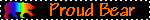
"Proud Bear," an LGBT subculture pride blinkie.
Credit: Blinkie Madness by alwayslisa (Wayback Machine archive). See also the Blinkie World archive.Binky Beads, made by Midgee of Namaii in , turned plastic pony-bead bracelets into a tiny web-building kit. Each bead was a 10-pixel square, and the set ran through letters, animals, happy faces, leopard print, and a pile of colors, so you could string together names, words, and bracelet-like strips. People used them on splash pages, as navigation, or dropped straight into a line of text. The original binkybeads.tk later moved to Binky Beads, where the last update is listed as and the bead vault itself is no longer reachable.[7]
Spider’s Web Tutorials was still adding lessons on making blinkies and other graphics in the mid-.
Artists offered adoptables in collectible sets of animals, dolls, fantasy creatures, food, plants, toys, and almost anything else for visitors to adopt, save to their own server, and display on their website with a link back to the creator. Adoption worked as a link exchange as much as a giveaway. In some cases a design could be adopted freely by anybody who wanted it; in others a particular pixel went to one adopter only, handled through email or a web form.[7] The pets themselves, also called cyberpets or virtual pets, might come with names, personalities, certificates, care instructions, or a tiny fictional habitat.
With mystery eggs and hatchables, instead of choosing the finished creature, you adopted an egg and waited to see what it became. Some worked by having the adopter display an image from the artist's server so the artist could later replace the egg file with its hatched form; the URL stayed the same, but the graphic on your page changed. There was no guarantee what you would get. It was a tiny web-graphics gachapon.
Later, clickable adoptables turned adoption into more of a game: you adopted an egg or pet and put its image and link in a forum signature, profile, or website; other people's views or clicks could help it hatch, grow, get fed, or level up. Dragon Cave[49], launched in , became one of the best-known examples, followed by sites and systems such as Valenth, Squiby, MagiStream, and later PokéFarm. Forum signatures could fill up with creatures waiting for clicks, which helped the pet grow while advertising the adoption site everywhere the owner posted.[50]
On Valenth, visitors fed the creatures rather than simply loading their images. Players in exchanged feeding links on Pink Poogle Toy’s forum, and a player guide described how the amount and kind of food affected the creature’s evolution. On Squiby, artists could also distribute their own adoptable designs, as the Egg Shoppe’s collection illustrates. Clicking the adoptable helped it level up.
On Dragon Cave, a view meant that the image had loaded; a click meant that somebody had followed it through to the dragon’s own page. The game counted total views, unique views, and clicks separately, as players explained in a Sims Forums thread. Too many views too quickly could make an egg sick, so getting as much traffic as possible was not necessarily the idea. Players also built hatcheries such as DragHatch, where you could put your eggs alongside everybody else’s rather than relying on people reading your forum posts.
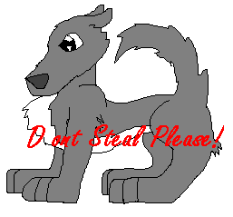
Some adoption sites turned the process into a whole ritual: read the rules, find the correct adoption link, then fill out and email a form with your name, site URL, and confirmation that you had actually read everything. Sometimes the obvious-looking link was a trap that sent you straight back to the rules.
Credit: kalaiawolf.People made graphics specifically for each other, too: birthday dolls, personalized site titles, buttons, and signatures. Someone might keep an entire page of gifts from friends or visitors, each linked back to whoever made it. Those were not necessarily freebies; some gift pages specifically told visitors not to take the graphics.
Game sites such as Flight Rising are where I still recognize a lot of this culture. Its Adoptables forum has artists offering creatures and custom drawings, while Art Sales has commissions and little shops run through forum threads.[51][52] The pets, the trading, the credit rules, and the decorated posts feel familiar even when the surrounding website is a game.
A toybox gave adopted and gifted pixels somewhere to live: pets, food, charms, dolls, patches, and whatever else had followed you home from somebody else's site, each linked back to its maker. Surviving examples include Cathie's Crazie Creations' adoption toybox.[7] The name belonged especially to the personal-domain and hosted-subdomain pixel scene.
Even when artists drew toybox pixels specifically for those collections, permission to display one did not necessarily extend to recoloring it, cutting it into a button, or using it in a layout. As with linkware, "free to use" could come with a surprisingly precise definition of use.
Pixel clubs gave members a common template or base to work from, usually around a theme such as teacups, cats, quilt patches, cakes, charms, or lava lamps. You made your own version, put it on your site, and then submitted it, traded it, or collected everybody else's, depending on how that club ran. Everyone started from the same little object; the point was seeing what each person did with it.
Teacups were one version of the format, remembered through the Teahouse MB community and the current Afternoon Tea collection. Kitty Friends, which modern documentation credits to Caz in , used cats instead.
Pixel cliques overlapped with clubs but could be held together by something as simple as a shared size, subject, scrap of code, or gimmick instead of one template everybody edited. Some worked mostly as affiliations; others asked members to make, exchange, or collect a small pixel object.
Pocket Town, created by Lani of Neonlove (archived original), turned a link exchange into a miniature pixel city. Members drew a tiny home or store, linked the building to a website, and arranged the buildings into their own town. Lani described it as "a cute little link exchange in the form of a city community." Buildings had to be between 20×20 and 60×60 pixels, small extras could go in the gaps, files had to be saved to your own server rather than hotlinked, and the main rule was simple: the building itself should always be a link. A modern tribute at Divergent Rays keeps Lani's introduction, rules, and templates and takes new buildings in the same format.[53] I used Neonlove when I was younger, and this is one of the sites I remember from back then.
Alexandra of miss-behaved.net remembers running Pixel Bakery in and , where members traded desserts and baked goods they had pixeled themselves.[54] The Yum-Yum Shoppe used a storefront instead: members made their own 15×15 items, put them out for "sale," and collected one another's by displaying them in their own Shoppe with a link back to the owner.[55]
The Quilting Bee (Q*Bee), founded in ,[56] was one of the more elaborate versions of the idea. Members made patches, 40×40 pixels each, traded them with one another, and "sewed" the patches they received onto pixel quilts displayed on their websites. The club also ran monthly pixel challenges, blog-a-thons, story writing, holiday-card exchanges, and other activities, with patches and pixel mushrooms given out for participating.
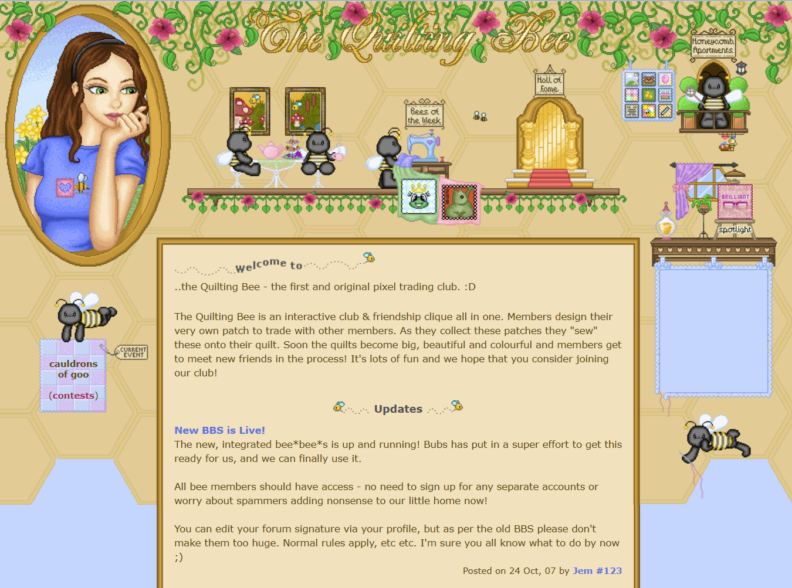
The club's honeycomb-themed layout, welcoming visitors as "the first and original pixel trading club." The front-page update announcing a new forum is signed "Posted on 24 Oct, 07 by Jem Turner #123," confirming Jem Turner was running the club by this date.
Credit: theqbee.net. Archived .lostletters, a former member of both q*bee and Teahouse MB, kept a Neocities shrine remembering the club.[57]
Founder Gurubii dated the club to . Jem Turner, running it by and still there for its 20th-anniversary page in , preserved this account:[56]
It all started on Feb 18 when I was viewing a slander of me on someones site. i was reading in and when i got to the bottom it said "..I pity her, with shame and her quilt." I thought to myself "where does this quilt come into play?" then I was inspired to make a club to connect REAL friends and nice people all together by doing none other than building an internet quilt! this is a club, you join, get your name on the members list, and make new friends! each time you make a friend you exchange your patches and sew them onto your quilt! soon your quilt will be big and beautiful and colorful!
Gurubii, quoted on the club's About page
To be considered for membership, an applicant needed a website of their own, a quilt page no more than three clicks from the front page, and a patch they had drawn themselves; the FAQ explicitly refused requests to make the applicant's patch for them.
A panel of members voted submissions up or down, and rejections were common: unoriginal graphics, a personal page with too little on it, text that broke in Firefox, or a missing official membership patch. GeoCities sites were declined as a category, the club explained, not because of the ad banners but because firewalls and ad blockers left them loading as blank pages for many members. The selectivity was deliberate, and the staff said so plainly: admitting everyone would produce thousands of members and a club nobody could manage. The surviving club pages put membership at roughly 350.
In a blog entry, Jem Turner (Jem Turner, or jemjabella) described how the rules had changed in the four years she had been running the club. By then members no longer needed an original layout, and the required number of trades had been reduced to one a month. The club still ran layout competitions of its own; that year an Easter egg hunt involved about 300 pixel eggs scattered across more than 100 members’ websites. A former member’s Quilting Bee collection also preserves graphics from its Halloween trick-or-treat event.
Members were responsible for pruning patches pointing at sites that had moved or disappeared, a recognized chore with a name, washing your quilt. Staff removed inactive members and dead sites from the member list for the same reason. The club changed hands several times across its long run, and most of the personal domains that hosted it along the way have since expired.
Jem Turner (Jem Turner, better known online as jemjabella) still makes websites, works in WordPress development, and has restored her own old quilt on her personal site. Her blog post about the club also survives.
Online TCGs turned graphics trading into a game with rules. The community generally credits Senshi Card-Mania!, opened , as the first fan-run online TCG of this particular personal-website variety.[58] Members earned randomized cards through games and site activities, traded duplicates with one another, and kept a trade post on their own website showing what they owned, what they were collecting, and what they had available. Your website was your binder. Cards were organized into themed decks, and completing a deck was known as mastering it. A mastery badge could sit on your trade post alongside the finished collection. The hobby eventually produced layouts made specifically for trade posts and scripts for keeping increasingly large collections organized.
A toybox could also contain graphics that were not up for adoption by visitors: gifts made for its owner, membership graphics, or pixels obtained through a shop. The fact that they were displayed on a public page did not necessarily mean you were allowed to take them.
Predating web Dollz entirely, KiSS (Kisekae Set System) was in development for NEC PC-9801VM2 computers by , according to its specification.[59] A set packaged a doll and clothing into a file you opened in a dedicated viewer, dragging pieces into place. It spread from Japan to other platforms during the , later adding animation, sound, and interaction.
The web culture that became known as Dollz grew out of The Palace, the graphical chat system opened to the public in .[60] Palace avatars were assembled from 44×44 graphics called props; a user could wear up to nine at once within a 132×132 area. Early Dollz often used three vertically stacked props in the middle of the grid for the body, leaving the others for clothing and accessories. These could be layered onto the body in the Palace prop editor, drawn directly onto the base, or edited from a pre-existing clothed doll. Individual Palaces kept collections of saved avatars, often sorted into types like Preps, Sk8rs, Silents, and whatever else that particular community had accumulated. Early names included "lil people" and paper dolls before "Dollz" became the name most widely associated with them on the web.
Once Dollz moved out of The Palace and onto personal websites, they no longer had to work within the constraints of Palace avatars. GeoCities, Angelfire, and independent domains filled up with finished dolls, downloadable bases, clothing, tutorials, contests, adoptions, requests, and drag-and-drop dollmakers. A dollmaker usually gave you a base surrounded by different hair, clothes, shoes, and accessories to layer onto it, after which the finished doll could be saved for use on your own site. With early drag-and-drop makers, that often meant taking a screenshot and cropping it in a graphics program. People edited and traded the dolls, entered them in contests, and drew new pieces for one another. Crediting the artist who made the base or other parts was an important part of the culture. Dollz Mania (Dollz Mania Backup) and The Doll Palace became two of the larger sites in a much wider network of personal Dollz sites.[61][62]
By the early , dolling had become a digital-art hobby in which some artists drew original bases, clothing, hair, and poses themselves, either from scratch or on top of another artist's credited base. In parts of the community, dolls or pixel dolls became preferable to "Dollz" for this kind of work, partly to distinguish hand-drawn dolls from those assembled in a dollmaker. The terminology was never very tidy. "Dollz," "dolls," "pixel dolls," and "cartoon dollz" all turn up, and "dolls" alone is a terrible search term if what you actually want is a tiny pixel-illustrated person from somebody's homepage. More specific names often tell you more anyway: Preps, Sk8rs, Silents, Minis, Wonderkins, Divas, and plenty of others referred to recognizable body styles, poses, or base families.
Unlike the rules for assembled dollmaker graphics, the terms for hand-drawn bases might let you draw over a base and post the finished doll with credit, but not distribute the unaltered body or use it in a maker of your own. Some dolling communities excluded assembled dolls from art submissions altogether, a distinction documented in the modern Pixel Dolls archive. The Brazilian site Dolls.com.br, whose materials carry copyright dates from through , also ran a Queen for a Day competition with instructions to draw a doll pixel by pixel on a base. In , Salon’s coverage of dolling described artists working pixel by pixel in Photoshop, MS Paint, and Paint Shop Pro, and the etiquette developed around the appropriation of other artists’ work.
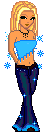
Blonde doll number 55 from The Doll Palace's library.
Credit: The Doll Palace (archived ).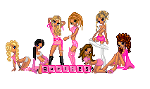
Seven silent-style dollz, named for their missing mouths, paired with a chain-style "gurlies" blinkie.
Credit: AddGlitter.com.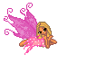
Many of the graphics that circulated on English-language doll sites as Candybar dolls originated in Korean commercial avatar systems, though Western users did not necessarily know which services the graphics came from. SayClub began offering avatars in and selling clothing and accessories that ; Freechal, Cyworld, and other services developed their own avatar economies. Users combined professionally drawn parts, often buying individual items as virtual goods. Cyworld's MiniMe lived in a decorated miniroom inside the user's minihompy, making the avatar part of both the person's appearance and the space around it.
Neowiz launched SayClub in as broadband internet was making its original OneClick internet-access business less profitable. The free community attracted a million registered members within three months and three million within a year, but advertising did not cover its costs, according to a case study of the company. Neowiz kept SayClub's chat, clubs, and email free when it introduced paid features on . Within a month the premium services had brought in more than ₩300 million, and by the end of , avatar sales alone had brought in over ₩10 billion that year, according to contemporary reports in ZDNet Korea and Electronic Times. By , Korean newspapers were reporting on the money being made from avatar accessories. In , Toshiba and Neowiz announced a Japanese version of SayClub; Toshiba’s announcement put the Korean service at 14 million registered members as of the end of January.
Some of the most popular Korean online games of the period were drawn in much the same medium. Nexon's The Kingdom of the Winds () and NCsoft's Lineage () used two-dimensional character graphics, while Gravity's Ragnarok Online () put its animated character sprites in three-dimensional environments, an approach Gravity explained in its financial filings partly in terms of the lower computer requirements compared with fully three-dimensional games. In MapleStory, which launched in Korea in , you could buy virtual clothes and change your character's face and hair, much as you could on an avatar site. The game was free to play, and sales of virtual items became part of its business.
In , Neowiz announced licensing agreements with Actoz Soft, JC Entertainment, Iyagi, and Sonnori to sell characters from Thousand Years, Red Moon, Fantasy For You, and Forgotten Saga as SayClub avatars.
Softmax had also entered the online market with 4LEAF (포립) in , an avatar-based chat and gaming service. Its world was subsequently used for the online RPG TalesWeaver, another Korean game with two-dimensional character sprites. Hardcore Gaming 101 documents the earlier service, and a preserved Korean description of TalesWeaver identifies 4LEAF as the basis for its setting.
Candybar[63] was one of the Korean avatar systems that became especially visible to Western doll sites. Neople, founded by students at Seoul National University in , developed it as its first game. An report described a matchmaking game combining the avatar systems of Korean chat sites with the format of the Korean television show Love Studio (사랑의 스튜디오). It opened in beta on as an avatar and gaming portal, with games including Love Love Studio and Kung Kung Tta.
By , publisher Sunny YNK reported that Candybar had passed two million registered members and was bringing in ₩1 billion a month from avatars. It expanded beyond matchmaking, offering six casual games and 17 avatar fashion shops by . Some of the clothes sold for use in the games had their own animations: a cowboy outfit made the avatar shoot a water pistol, and a penguin outfit had it running with a bucket of fish.
Neople went on to develop Dungeon Fighter Online (던전앤파이터), the side-scrolling action RPG released in Korea in , with considerably more elaborate animated sprites and another wardrobe of customizable character graphics. In a interview with Gamasutra, director Yunjong Kim recalled the company's move from Candybar into larger games and explained that Neople had been able to recruit Korean 2D artists as other studios moved into 3D game development.
Around , Candybar's artwork began circulating much more widely in English-language dolling through eLouai's unofficial Candybar Doll Maker.[64] eLouai took the existing Candybar assets and turned them into a browser-based customization tool, letting users combine the bodies, faces, hair, clothes, shoes, accessories, pets, backgrounds, and other pieces that Candybar's artists had already drawn. You could make and save a Candybar doll without ever having visited the Korean site or knowing that it was a matchmaking and gaming service.
Candybar assembled avatars from transparent GIF layers in a fixed 150×290 area with 32 image slots. Like The Palace props, the pieces stacked into a character: a piece could sit behind the body, in front of it, or span several layers, and animated items could keep moving without flattening the whole doll into one picture.
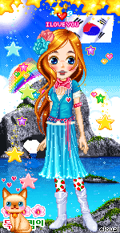
Made with eLouai's Candybar Doll Maker.
Credit: littlemissninja on LiveJournal, posted .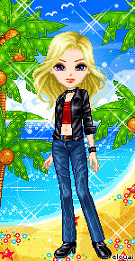
"This one's from the Candybar 4 Doll Maker."
Credit: Scar Ayres (Scarmander), uploaded .Korean avatar graphics were easy to pick out among the Western Dollz and pixel graphics circulating on personal sites. They looked more like little digital illustrations, with taller dolls borrowing the long legs and narrow waists of fashion illustrations and smaller styles exaggerating the size of the head and rounding out the body. Faces had some of the stylization of manhwa, with large, expressive eyes, carefully drawn eyelashes, blush, and glossy lips. Where much of Western pixel art used relatively limited palettes and distinct bands of shading, Korean avatar artists worked with considerably more intermediate shades and softer, colored outlines. Even at their tiny size, you could make out individual strands of hair, the stitching and faded patches on a pair of jeans, the patterns in lace, and the different ways light caught leather, silk, and jewelry.
The furniture, food, animals, and other objects had a particularly cute, almost toy-like quality to them, even when they depicted fairly ordinary things. Colors ranged from sugary pastels to extraordinarily saturated pinks, blues, and greens, and an otherwise ordinary outdoor scene might have sparkling water, jewel-like flowers, rainbows, and little hearts floating through the air. Many of these services gave you not just a wardrobe for your avatar but furniture, pets, gardens, and entire rooms to decorate.
Western doll sites collected Candybar dolls alongside Preps, Silents, pixel dolls, and other styles, treating Candybar as a type of doll as much as the name of a particular service. The Korean services themselves generally called them avatars and the individual clothes and accessories avatar items. Similar graphics also came from Cyworld, SayClub, Netmarble, Hangame, Daum, Buddy Buddy, and Freechal, and identifying which service a particular graphic originally came from is not always easy. Much of that material is harder to reconstruct now because the original avatar systems were tied to user accounts and pages the Wayback Machine archives could never fully reach.
Established around , The Doll Palace became one of the largest sites devoted to Dollz. Contemporary references to the site survive from as early as .[65] It offered extensive libraries of premade cartoon dolls, dollmakers, animated graphics, and buddy icons for AIM and MSN. Members could share their creations in doll galleries, vote in polls, enter contests, write stories, play games, and socialize through forums and avatar chat. The site offered free and premium memberships, with certain dollmaking features, including animation, reserved for paying members. A review in Dawn and a former user's account from document many of these features.
Alongside its existing cartoon dollmakers, The Doll Palace introduced a CandyBar Doll Maker on , available to registered users, including those with free accounts. Its navigation still called it a beta.[66] By the capture, the label had changed to "Candy Doll Maker (Candybar Doll Maker)," without the beta tag.[67]
Surviving copies of the homepage include a message from a woman calling herself Jessica, who introduced herself as the site's owner. A former member writing in also remembered Jessica as the webmistress. Her identity and relationship to the site's documented owner, Alex Syrov, remain unclear.
In , Texas sued The Doll Palace Corporation and Syrov, alleging that they collected personal information from children under 13 without properly verifying parental consent. The site's profile questions included smoking and drinking habits and whether users wanted to meet older people.[68] Syrov maintained that the site complied with the law. A settlement imposed $11,500 in penalties and fees, parental-consent requirements, and restrictions on profile questions and the public display of children's information.[69]
By , the homepage still carried a copyright line and said the Cartoon Dolls section had last been updated 2,991 days earlier. If the counter was accurate, that puts the update around ; it doesn't date the last activity anywhere else on the site.[70] By , the homepage redirected to a database-maintenance error page.[71]
Forums, AIM, LiveJournal, and later MySpace ran alongside personal domains for years. Website buttons became profile badges and stamps. Guestbooks and comments coexisted. Doll and pixel-art communities appeared in avatars and icons as easily as on a homepage. Graphics sites added Photoshop brushes, textures, and templates beside the older GIFs and websets, serving whichever platform you happened to be decorating.
Forums offered two main spots to customize: an avatar beside your username and a signature under your posts. They could match as a set or have nothing to do with each other. Graphics boards often bundled requests for both, with the same designers making avatars and signatures.
Avatar and icon sizes depended on the platform, and people kept accounts and icons on several platforms at once. Forum avatars followed whatever limits the board imposed. AIM buddy icons ran 48×48 or 50×50 (the Gaim FAQ also advised keeping them under 4 KB), MSN Messenger display pictures were 96×96, and LiveJournal userpics were 100×100. Dedicated sites often supplied all of it, collecting AIM icons, MSN pictures, Yahoo smileys, and away messages by the thousands.
Signatures were the customizable block automatically attached beneath forum posts. They could be one line of text or a quote, but people often treated the space like a miniature profile: custom graphics, usernames, favorite characters, animations, links, whatever the board's vertical space and content rules and limits allowed. Making signatures became its own branch of web graphics. You could make one yourself, ask a friend, or post in a request thread where a designer took your username, character or image, colors, text, and general direction, then posted the finished version back, sometimes with revisions or several options. Designers also competed in signature contests or took turns modifying the same picture. In , Wired described Photoshop tennis, in which two designers sent a layered image file back and forth, each adding a layer on their turn.
The graphic inside a forum signature was often called a sig tag. It usually centered on a character or other artwork, sometimes with a name or username worked into the design. People made them in programs such as Paint Shop Pro and Photoshop using swirl, grunge, sparkle, and vector brushes, along with pixel art, glitter, decorative type, and Paint Shop Pro tubes. You generally used one until you made or requested a new one to replace it.
In Paint Shop Pro email groups, a tagger might offer a finished sig tag design to the group and add each requester’s name to a separate copy. People on an always list received each new design without having to request it. These groups survived the personal-homepage era: a list of graphics groups advertises always lists, tag offers, tutorials, and collections of tubes and other materials, including groups that explicitly required copyright compliance. A Usenet FAQ explained how to install and make picture tubes in Paint Shop Pro 5.
Made in Adobe Photoshop CS5.1 with swirl and sparkle brushes. It features Deedlit, the high elf from the classic fantasy anime and light-novel series Record of Lodoss War, illustrated in character designer Nobuteru Yuki's distinctive Art Nouveau style.
Credit: Inverse Effect at AVP Galaxy Forums; tutorial posted .Salvaged, maintained by Belle, archives brushes from older graphics programs, including the kinds of assets used to make graphics like these.
By the mid-, userbars were a forum-signature staple: long, thin 350×19 banners, usually with a tiny image on one side and text on the other, announcing whatever the bar was about. Because they were only 19 pixels tall, you could stack several of them inside a forum's signature-height limit. They were also much easier to collect and swap around than a full custom signature graphic.
The familiar userbar recipe called for a gradient, diagonal scanlines, a translucent oval highlight across the top, a one-pixel black border, and lettering in the bitmap font Visitor. A Photoshop tutorial specified Visitor TT2, while USERBARS.org told readers to turn off antialiasing to keep the letters sharp.
Unlike most of these formats, stamps can be traced to a specific creator and event: DeviantArt's then-creative director Ryan Ford created the format for the DeviantArt Summit, originally planned for an airplane hangar; the little air-mail or postage-style badge made sense for the event. The two earliest recovered examples were posted on .[72] The standard became a 99×56 graphic framed by that recognizable perforated postage-stamp border, either static or animated.
Users almost immediately turned stamps into tiny visual bumper stickers declaring their fandoms, ships, software, music, games, political and social views, characters, aesthetics, jokes, and every variety of "I support…" or "Proud ___" declaration. Some had edgy Happy Bunny or Spencer's-tee energy; others were practical DeviantArt etiquette, telling visitors to view the full artwork, not steal it, leave feedback, stop repeatedly viewing a page without watching the account, or check whether requests and commissions were open.
The stamp was usually uploaded as a DeviantArt deviation of its own. Other users didn't have to save and re-upload the GIF to display it. Where the site permitted it, they could embed the original deviation with thumbnail syntax such as :thumb427548925:, so the stamp on their profile still pointed back to the creator's submission.
Before DeviantArt users could embed deviation thumbnails in comments, they found a way to use the site’s account icons instead. A plz account was an account created to hold a reusable avatar, often an animated reaction face, character, or unofficial emoticon. The name usually ended in plz, and typing :iconusername: inserted the account’s icon. The account existed so other people could use its picture. DeviantArt’s own help pages explain the practice.
The 50×50 avatar limit didn’t necessarily mean the graphic had to be 50×50. People cut larger images into squares, made an account for each piece, and put the icons back together in the comment box. Several accounts could supply one long reaction image or a mosaic assembled across multiple lines. Surviving examples of plz accounts document the technique.
"See Me at the Summit," posted , one of the two rediscovered original DeviantArt Summit stamps.
Credit: summitgroup on DeviantArt."I Support the Summit," posted , the companion original.
Credit: summitgroup on DeviantArt.zilla774's "Stamp Template," historically notable: the description credits Ryan Ford's stamp idea as the basis for the designs the creator had been making.
Credit: zilla774 on DeviantArt.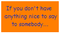
"If you don't have anything nice to say to somebody... Then you must be talking to Miley Cyrus, Justin Bieber, or the Jo Bros."
Credit: toasterstoasttoast on DeviantArt, uploaded .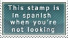
"This stamp is in Spanish when you're not looking."
Credit: daakukitsune on DeviantArt, uploaded ."Thanks for the comment, fave, watch!"
Credit: icexdragon on DeviantArt, uploaded .Kaoani were little animated graphics used to carry a reaction: bouncing faces, floating blobs, animals, food, and characters laughing, crying, cheering, or having a small crisis. They came out of Japanese web culture and animated the expressions familiar from text-based kaomoji, faces such as (^_^).[73] An report in INTERNET Watch described a group of eighteen creators making round, floating GIF characters that resembled daifuku mochi. The graphics were offered for use in bulletin boards, chats, and HTML email.[74] They were small enough to sit inside a conversation, where a whole sig tag would have been a bit much.
Like other web graphics, kaoani were collected and reposted, sometimes with their credit left behind. Writing in , a Neocities user described trying to trace a favorite cactus back to its maker and finding large collections but no clear attribution.[73] A surviving kaoani collection still groups thousands by character and expression.
The public preview of MSN Messenger 6 included animated emoticons and let users make custom emoticons from images they created or uploaded. Microsoft also announced a group for sharing emoticons, backgrounds, and display pictures.[75]
In early versions of MSN Messenger, custom emoticons normally occupied 19×19 pixels. You could assign one a keyboard shortcut, so typing a word or a particular combination of characters in a conversation would insert your own picture instead. Animated custom emoticons were a later addition, distinct from the built-in animations in Messenger 6. An tutorial shows the import process. The Messenger 7 beta added Winks, Nudges, and theme packs; the same announcement introduced MSN Spaces, a blogging service with fifteen backgrounds and five layout templates.
Iconator collected AIM buddy icons, avatars, wallpapers, and away messages.[76] Glitter-Graphics.com and Dazzle Junction supplied glitter text, backgrounds, layouts, and copy-and-paste code for MySpace and other profiles.[77][78][79] FlamingText generated headings and animated text from whatever you typed into the box.[80] A graphics site could serve several platforms at once, with different sizes and code for wherever you wanted to put the result.
The copy-and-paste code supplied by a profile graphics site often contained both an image hosted by the site and a link back to it. Unlike the small linkware sites that told visitors to upload every GIF to their own server, these sites wanted people to embed their images directly. Every profile displaying one could send visitors back to the graphics collection without its owner having to find image hosting at all.
You could take a background from one graphics site, a premade iframe layout from another teenager, learn how to change its scrollbar from Funky Chickens, grab an ALT character from CYP2, add an official Neopets GIF with your referral link, put a Candybar doll beside the guestbook, and finish with a row of buttons linking back to everybody whose work you'd used. Of course it looked eclectic: half the page came from different people.
Some formats were defined by their exact dimensions; others depended on the site or program displaying them:
| Format | Common / canonical size | Why this size? |
|---|---|---|
| Website button ("Link Me") | 88×31 | Popularized by early web badges, including Netscape's promotional buttons, and later recognized by the IAB as the "Micro Bar." The exact dimensions were a convention rather than a browser limitation. |
| Antipixel button | 80×15 | Popularized by Jeremy Hedley's Antipixel buttons in the early . The deliberately tiny format worked well for weblog sidebars and spread as a reusable template rather than because of a technical restriction. |
| Fanlisting code | 50×50, 75×50, 100×35, 100×50 (sometimes 88×31 or 200×40) | There was no single required size. Fanlistings offered several standardized code sizes so members could choose one that fit their own site's layout, and those dimensions became conventions across the community. |
| DeviantArt stamp | 99×56 | Originated with DeviantArt's Summit promotion as a tiny digital stamp or bumper sticker. The original 99×56 template was copied for user-made stamps until the dimensions became part of the format; it was not a DeviantArt image-size limit. |
| Userbar | 350×19 | Designed for forum signatures: wide enough for a label and small graphic, but short enough that several could be stacked without taking over a post. The exact 350×19 dimensions became a community template standard rather than a universal forum restriction. |
| Banner blinkie | 150×20 | The classic blinkie template was long enough for a short line of animated text while remaining tiny enough to stack with other graphics. The dimensions were a community convention, not a Neocities restriction. |
| Quilting Bee patch | 40×40 | A club standard rather than a technical one. A fixed square meant every member's patch sat the same size in everybody else's quilt, so a page of traded patches tiled into an even grid however many people you had swapped with. |
| Web banner (banner exchange) | 468×60 | Standardized as the web advertising "full banner," allowing the same ad to circulate through banner exchanges and unrelated websites without being resized. It was later formalized as an IAB standard ad size. |
| AIM buddy icon | 48×48 or 50×50 | A client-imposed small icon size that suited a compact chat interface, in line with contemporary desktop interface icons of the time. AOL does not appear to have documented why it chose exactly 48–50 pixels. |
| MSN display picture | 96×96 | Messenger displayed and resized profile pictures to 96×96 as part of its interface design. Microsoft does not appear to have documented why it chose exactly 96 pixels. |
| MSN custom emoticon | 19×19 | Messenger 6 resized custom emoticons to 19×19; later versions and third-party extensions supported larger graphics. |
| LiveJournal userpic | 100×100 | A platform maximum suited to LiveJournal's text-heavy layout: large enough to work as an expressive image, but small enough to appear repeatedly beside posts and comments. The site's interface became heavily structured around the 100×100 limit, although the original reason for choosing exactly 100 pixels does not appear to be documented. |
| The Palace prop / maximum avatar area | 44×44 / 132×132 | The Palace was built around a fixed 44×44 sprite tile: the default roundhead and each wearable prop occupied one tile. An avatar could combine up to nine props across a 3×3 area, producing the 132×132 maximum. The reason 44 pixels specifically was chosen does not appear to be documented. |
| DeviantArt avatar / plz icon | 50×50 | Historical avatar restriction, inherited by plz accounts. |
| Binky Bead | 10×10 | Creator-defined square used to assemble strings of beads. |
| Small blinkie | 88×15 | Personal-site convention; two stacked with a one-pixel gap fit the height of an 88×31 button. |
| Affiliate button | 32×32 | Common convention in the personal-domain community. |
| Forum avatar / signature | Variable | Limits depended on the individual forum. |
Between personal websites and standardized social media came a middle stage of customizable, centralized profiles, and MySpace is the important transitional case. Writing in , Lialina described people moving out of standalone homepages into "the language of MySpace" (accounts, profiles, journals, channels), while pointing out how much those pages still resembled their Web 1.0 predecessors: a background with blocks of graphics, text, and video laid over it, held together by the same modular, HTML-based aesthetic.[81] MySpace moved identity and social interaction inside one company's service, but users could still make their page look unmistakably like theirs. In that sense, it extended the homepage habit rather than replacing it all at once.
On LiveJournal, you had a journal you could style, a separate user profile, and a friends page that collected posts from the journals you followed, as described in a comparison of social networking sites. Xanga had its own premade layout scene. A Final Fantasy X-2 layout submitted to CreateBlog in used custom scrollbars, 8pt Arial, a fixed background, and CSS that hid parts of Xanga’s standard navigation. The layout maker now had to work around the HTML of a service they did not control.
Piczo let users build several pages rather than decorate one profile, a difference noted in a Wired article. Piczo Zone, introduced in , supplied graphics and multimedia contributed by users, putting the resource collection inside the page-building service as it competed with other social networks. On Tumblr, by the service was developing its custom theme engine; you could style your public blog separately from the dashboard where you read other people’s posts.
Personal websites had always been social, with guestbooks, affiliates, cliques, webrings, comments, message boards, and long networks of links between people. The bigger change was that the page itself became standardized. Facebook[82] did not give users the same control over the appearance of their profiles, and that became increasingly normal. The broader shift called Web 2.0[83] put more user-created material inside centralized services, while the services decided how that material would be arranged and presented. Your profile could contain your photographs, writing, friends, interests, and updates without looking much different from anybody else's.
User-supplied code also posed security problems for a shared platform. In , the Samy worm spread from one MySpace profile to roughly a million accounts, forcing the site to intervene. The incident became a case study in research on JavaScript worms.
Maintaining a standalone homepage increasingly felt old-fashioned: it meant finding hosting, editing pages, uploading files, fixing broken links, and giving people a reason to visit an address they had to remember or bookmark. A social network already had the audience, the publishing tools, and everyone you knew sitting inside it. The trade was convenience for control, and over time fewer people needed a personal homepage badly enough to make one.
The old infrastructure lingered much longer than the culture around it. Lycos kept the remaining Tripod and Angelfire sites online long after the free-hosting era had passed, then took them down on , ending nearly three decades of web hosting. The shutdown notice appeared on the Lycos homepage in , vanished while staying in the page source, and came back in .[84] The full chronology is on the Preservation timeline.
What faded was a period when making a place for yourself online usually meant making the place itself: choosing where it lived, deciding how it looked, filling it with things you had made or collected, and linking it by hand to other people's places. Social media kept most of the people and much of the activity. It left less room for the page around them.
Glitter graphics outlived the homepage, moving on to profiles, to Blingee, and to messaging apps, as covered in History.
angelfire.com/biz6/bootcamp/ as an example.name.angelfire.com.iframe element to divide a page was common among amateur web designers in the early , allowing separate pages to appear inside a larger page without duplicating their contents.Additional sources consulted for background, not individually cited inline.